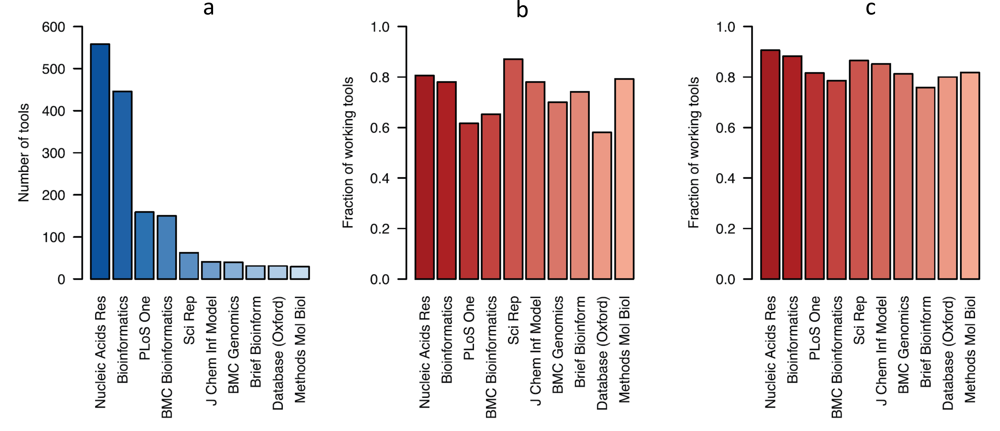

The server is part of the experiment
One reason we cared about edge deployment was reproducibility. Sharing code should make computational work easier to reproduce, yet code and data are still missing from a large fraction of published machine learning studies. Littmann and colleagues reviewed 250 life science and medical machine learning papers. Only about half shared software and 64 percent shared data [2].
A scientific web server can make a complicated method available to anyone with a browser. It can also disappear when funding ends, a dependency breaks, or the original student leaves. In another paper, researchers checked 2396 bioinformatics tools. More than 90 percent of recently published tools were reachable, while availability fell to about 50 percent for tools that were ten years old [3].

Move inference to the edge
Edge computing means running computation close to where the data are produced instead of sending every input to a central server. The edge could be a phone, laptop, sensor, or nearby gateway. In our case the edge is simply the user's web browser.
We kept model training on conventional compute. Only the forward pass moved to the user's device. A static host delivers the HTML, JavaScript, a TensorFlow.js model description, and binary weight files. The browser reconstructs the trained network once those files arrive.
The app maps each amino acid to an integer token and builds the tensors expected by the model. TensorFlow.js then calls the loaded Keras model and executes model.predict. The implementation registers a WebGL backend for browser acceleration and keeps a CPU backend as a fallback. The predicted score is returned directly to the page. No peptide sequence needs to be posted to an inference API.
In our paper, this pattern powered three bidirectional LSTM models for peptide hemolysis, solubility, and resistance to nonspecific interactions [1]. We trained the models with Keras and TensorFlow, then deployed them through TensorFlow.js at peptide.bio. The same static app runs on ordinary computers and phones.
Serverless does not mean server free
We did not remove every server. The browser still downloads static files from somewhere, so the first visit needs a web host and a network connection. What we removed was the dedicated service that receives each input and runs each prediction. Static hosting is cheap, easy to mirror, and has fewer moving parts than an application server with a model environment and API.
It also changes reproducibility. The trained model becomes part of the publication artifact. A reader can open the page and use the same model without recreating a Python environment or waiting for a remote queue. Inputs also do not need to leave the device for inference.
Could this use PyTorch?
Yes, although direct PyTorch execution in a browser is not the usual route. If we rebuilt this today, we would train in PyTorch, export the forward graph to ONNX, and run it with ONNX Runtime Web. ONNX Runtime can use WebAssembly broadly and WebGPU where supported. The JavaScript preprocessing must still match training exactly, including token IDs, padding, sequence length, and output interpretation.
A native phone application could instead use ExecuTorch. The tricky part is usually operator support and faithful preprocessing, not whether the weights started in TensorFlow or PyTorch. The edge-computing idea stays the same.
Where the idea fits
Browser inference works well when the trained model is modest in size and each prediction is independent. It is less attractive for very large models, expensive preprocessing, protected weights, or workflows that need centralized databases and audit logs.
For us, the point was larger than one peptide predictor. A scientific model can be shipped as a durable static artifact rather than a service someone must keep alive.